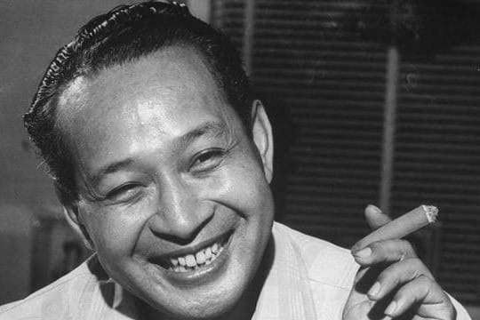

Suharto[a][b] (8 June 1921 – 27 January 2008) was an Indonesian military officer and politician, who served as the second and the longest serving President of Indonesia. Widely regarded as a military dictator by international observers, Suharto, backed by Western powers such as the United States, led Indonesia as an authoritarian regime from 1967 until his resignation in 1998 following nationwide unrest.[3][4][5] His 31-year dictatorship is considered one of the most brutal and corrupt of the 20th century, as he was central to the perpetration of mass killings against alleged communists and subsequent persecution of ethnic Chinese, irreligious people, and trade unionists.[6][7][8]
Suharto was born in the small village of Kemusuk, in the Godean area near the city of Yogyakarta, during the Dutch colonial era.[9] He grew up in humble circumstances.[10] His Javanese Muslim parents divorced not long after his birth, and he lived with foster parents for much of his childhood. During the Japanese occupation era, Suharto served in the Japanese-organized Indonesian security forces. During Indonesia's independence struggle, he joined the newly formed Indonesian Army. There, Suharto rose to the rank of major general some time after full Indonesian independence was achieved.